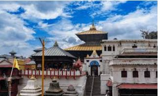

HISTORICAL
PEACEFUL E-Library for the
NEPAL Nepali Students
E-LIBRARY
HISTORICAL
PEACEFUL
E-Library for the
NEPAL Nepali Students
E-LIBRARY
⚲
Home
Historical Thinking
Browse History
About

 This temple situated on the banks of the holy River Bagmati is the most revered Hindu temple in Nepal. The main temple complex is open only to the Hindus; non-Hindus must satisfy themselves by observing from the terraces just across the Bagmati River to the east. As a mark of reverence and tradition, leather items that include shoes, belts and cameras are forbidden within the temple complex and must be left outside. Photography is strictly prohibited. The most important festival observed here is Shivaratri, or ‘the Night of Lord Shiva’ - the night Lord Shiva self-originated - when devotees and pilgrims from far and wide across Nepal and India, including sadhus (barely attired holy men with long locks of hair and smeared in ashes) and ascetics, throng the temple to have a darshan (glimpse) of the sacred Shiva lingam. The other holy occasion when devotees descend to the temple in large numbers is on Teej (a festival solely observed by Hindu women) in mid-September. The whole temple complex and the adjoining areas turn into a sea of red as women draped in their bridal red sarees and wearing yellow or green bead necklaces offer prayers for the well-being, prosperity, and longevity of their husbands. The temple is just as crowded with devotees every fortnight on the 11th day of the lunar month on Ekadashi. Among the Ekadashis, the most prominent and holiest two are the Harishayani Ekadashi in Ashadh (June/July) and four months later, Haribodhini Ekadashi in Kartik October/November.
Pashupatinath